支持向量机
第一层、了解SVM
支持向量机，因其英文名为support vector machine，故一般简称SVM，通俗来讲，它是一种二类分类模型，其基本模型定义为特征空间上的间隔最大的线性分类器，其学习策略便是间隔最大化，最终可转化为一个凸二次规划问题的求解。
1.1、线性分类
理解SVM，咱们必须先弄清楚一个概念：线性分类器。
1.1.1、分类标准
考虑一个二类的分类问题，数据点用x来表示，类别用y来表示，可以取1或者-1，分别代表两个不同的类，且是一个n 维向量，w^T中的T代表转置。一个线性分类器的学习目标就是要在n维的数据空间中找到一个分类超平面，其方程可以表示为：
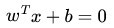
可能有读者对类别取1或-1有疑问，事实上，这个1或-1的分类标准起源于logistic回归，为了过渡的自然性，咱们就再来看看这个logistic回归。
1.1.2、1或-1分类标准的起源：logistic回归
Logistic回归目的是从特征学习出一个0/1分类模型，而这个模型是将特性的线性组合作为自变量，由于自变量的取值范围是负无穷到正无穷。因此，使用logistic函数（或称作sigmoid函数）将自变量映射到(0,1)上，映射后的值被认为是属于y=1的概率。
假设函数
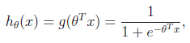
其中x是n维特征向量，函数g就是logistic函数。
而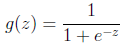的图像是

可以看到，通过logistic函数将自变量从无穷映射到了(0,1)，而假设函数就是特征属于y=1的概率。
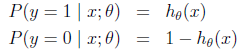
从而，当我们要判别一个新来的特征属于哪个类时，只需求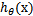，若大于0.5就是y=1的类，反之属于y=0类。
再审视一下，发现只和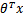有关，>0，那么>0.5，g(z)只不过是用来映射，真实的类别决定权还在。还有当>>0时，=1，反之=0。如果我们只从出发，希望模型达到的目标无非就是让训练数据中y=1的特征>>0，而是y=0的特征<<0。Logistic回归就是要学习得到，使得正例的特征远大于0，负例的特征远小于0，强调在全部训练实例上达到这个目标。
1.1.3、形式化标示
- 我们这次使用的结果标签是y=-1,y=1，替换在logistic回归中使用的y=0和y=1。
- 同时将替换成w和b。
- 以前的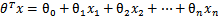，其中认为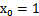，现在我们替换为b；
- 后面的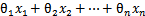 替换为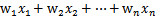（即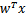）。
这样，我们让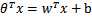，进一步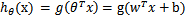。也就是说除了y由y=0变为y=-1，只是标记不同外，与logistic回归的形式化表示没区别。
再明确下假设函数
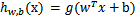
上面提到过我们只需考虑的正负问题，而不用关心g(z)，因此我们这里将g(z)做一个简化，将其简单映射到y=-1和y=1上。映射关系如下：
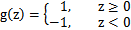
于此，想必已经解释明白了为何线性分类的标准一般用1 或者-1 来标示。
1.2、线性分类的一个例子
假定现在有一个一个二维平面，如下图所示，平面上有两种不同的点，分别用两种不同的颜色表示，一种为红颜色的点，另一种为蓝颜色的点，如果我们要在这个二维平面上找到一个可行的超平面的话，那么这个超平面可以是下图中那根红颜色的线(在二维空间中，超平面就是一条直线)。
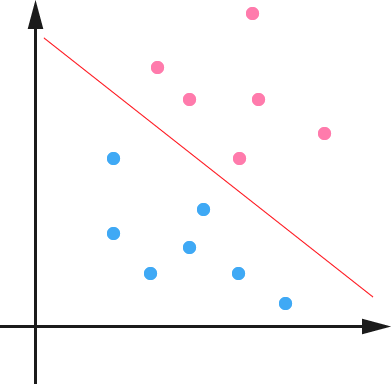
从上图中我们可以看出，这条红颜色的线作为一个超平面，把红颜色的点和蓝颜色的点分开来了，在超平面一边的数据点所对应的y全是 -1 ，而在另一边全是1。
接着，我们可以令分类函数：

显然，如果 f(x)=0 ，那么x是位于超平面上的点。我们不妨要求对于所有满足 f(x)<0 的点，其对应的="" y="" 等于="" -1="" ，而="" f(x)="">0 则对应 y=1 的数据点。
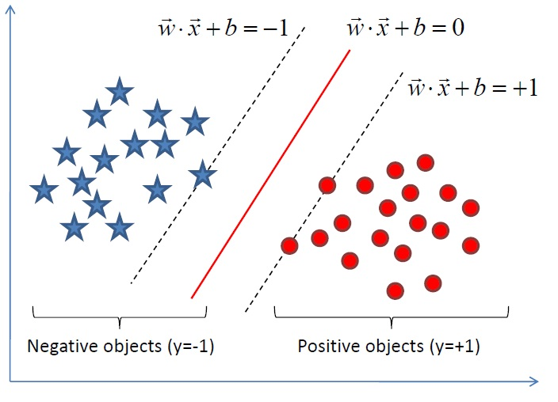
注：上图中，定义特征到结果的输出函数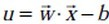，与我们之前定义的实质是一样的。为什么？因为无论是，还是，不影响最终优化结果。下文你将看到，当我们转化到优化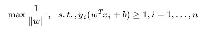的时候，为了求解方便，会把yf(x)令为1，即yf(x)是y(w^x + b)，还是y(w^x - b)，对我们要优化的式子max1/||w||已无影响。
从而在我们进行分类的时候，将数据点 x代入 f(x) 中，如果得到的结果小于 0 ，则赋予其类别 -1 ，如果大于 0 则赋予类别 1 。如果 f(x)=0，则很难办了，分到哪一类都不是。
此外，有些时候，或者说大部分时候数据并不是线性可分的，这时满足这样条件的超平面可能就根本不存在，这里咱们先从最简单的情形开始推导，就假设数据都是线性可分的，亦即这样的超平面是存在的。
1.3、函数间隔Functional margin与几何间隔Geometrical margin
一般而言，一个点距离超平面的远近可以表示为分类预测的确信或准确程度。
- 在超平面w*x+b=0确定的情况下，|w*x+b|能够相对的表示点x到距离超平面的远近，而w*x+b的符号与类标记y的符号是否一致表示分类是否正确，所以，可以用量y*(w*x+b)的正负性来判定或表示分类的正确性和确信度。
于此，我们便引出了定义样本到分类间隔距离的函数间隔functional margin的概念。
1.3.1、函数间隔Functional margin
我们定义函数间隔functional margin 为：
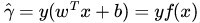
接着，我们定义超平面(w，b)关于训练数据集T的函数间隔为超平面(w，b)关于T中所有样本点(xi，yi)的函数间隔最小值，其中，x是特征，y是结果标签，i表示第i个样本，有：
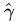= mini (i=1，…n)
然与此同时，问题就出来了：上述定义的函数间隔虽然可以表示分类预测的正确性和确信度，但在选择分类超平面时，只有函数间隔还远远不够，因为如果成比例的改变w和b，如将他们改变为2w和2b，虽然此时超平面没有改变，但函数间隔的值f(x)却变成了原来的2倍。
事实上，我们可以对法向量w加些约束条件，使其表面上看起来规范化，如此，我们很快又将引出真正定义点到超平面的距离—几何间隔geometrical margin的概念（很快你将看到，几何间隔就是函数间隔除以个||w||，即yf(x) / ||w||）。
1.3.2、点到超平面的距离定义：几何间隔Geometrical margin
对于一个点 x ，令其垂直投影到超平面上的对应的为 x0 ，w 是垂直于超平面的一个向量，为样本x到分类间隔的距离，

我们有

其中，||w||表示的是范数。
又由于 x0 是超平面上的点，满足 f(x0)=0 ，代入超平面的方程即可算出：

不过这里的是带符号的，我们需要的只是它的绝对值，因此类似地，也乘上对应的类别 y即可，因此实际上我们定义 几何间隔geometrical margin 为(注：别忘了，上面的定义，=y(wTx+b)=yf(x) )：
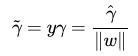
代人相关式子可以得出：yi*(w/||w|| + b/||w||)。
综上，函数间隔y(wx+b)=yf(x)实际上就是|f(x)|，只是人为定义的一个间隔度量；而几何间隔|f(x)|/||w||才是直观上的点到超平面距离。
1.4、最大间隔分类器Maximum Margin Classifier的定义
由上，我们已经知道，函数间隔functional margin 和 几何间隔geometrical margin 相差一个的缩放因子。按照我们前面的分析，对一个数据点进行分类，当它的 margin 越大的时候，分类的 confidence 越大。对于一个包含 n 个点的数据集，我们可以很自然地定义它的 margin 为所有这n个点的 margin 值中最小的那个。于是，为了使得分类的 confidence 高，我们希望所选择的超平面hyper plane 能够最大化这个 margin 值。
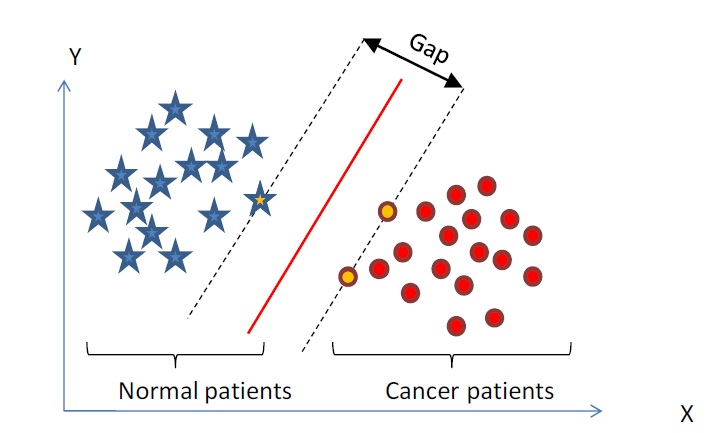
且
functional margin 明显是不太适合用来最大化的一个量，因为在 hyper plane 固定以后，我们可以等比例地缩放 w 的长度和 b 的值，这样可以使得
的值任意大，亦即 functional margin可以在 hyper plane 保持不变的情况下被取得任意大，而 geometrical margin 则没有这个问题，因为除上了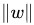这个分母，所以缩放 w 和 b 的时候的值是不会改变的，它只随着 hyper plane 的变动而变动，因此，这是更加合适的一个 margin 。
这样一来，我们的 maximum margin classifier 的目标函数可以定义为：
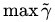
当然，还需要满足一定的约束条件：
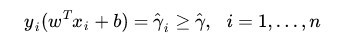
其中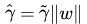 (等价于= /||w||，故有稍后的 =1 时， = 1 / ||w||)，处于方便推导和优化的目的，我们可以令=1(对目标函数的优化没有影响) ，此时，上述的目标函数转化为：

其中，s.t.，即subject to的意思，它导出的是约束条件。
通过求解这个问题，我们就可以找到一个 margin 最大的 classifier ，通过最大化 margin ，我们使得该分类器对数据进行分类时具有了最大的 confidence，从而设计决策最优分类超平面。
如下图所示，中间的红色线条是 Optimal Hyper Plane ，另外两条线到红线的距离都是等于的(便是上文所定义的geometrical margin，当令=1时，便为1/||w||，而我们上面得到的目标函数便是在相应的约束条件下，要最大化这个1/||w||值)：

1.5、到底什么是Support Vector
通过上节1.4节最后一张图：
我们可以看到两个支撑着中间的 gap 的超平面，到中间的纯红线separating hyper plane 的距离相等，即我们所能得到的最大的 geometrical margin，而“支撑”这两个超平面的必定会有一些点，而这些“支撑”的点便叫做支持向量Support Vector。
换言之，Support Vector便是下图中那蓝色虚线和粉红色虚线上的点：
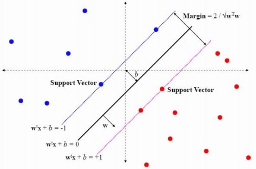
很显然，由于这些 supporting vector 刚好在边界上，所以它们满足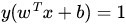，而对于所有不是支持向量的点，也就是在“阵地后方”的点，则显然有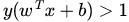。
第二层、深入SVM
2.1、从线性可分到线性不可分
2.1.1、从原始问题到对偶问题的求解
根据我们之前得到的目标函数（subject to导出的则是约束条件）：
由于求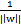的最大值相当于求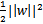的最小值，所以上述目标函数等价于：
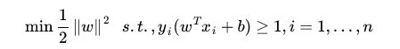
- 这样，我们的问题成为了一个凸优化问题，因为现在的目标函数是二次的，约束条件是线性的，所以它是一个凸二次规划问题。这个问题可以用任何现成的 QP (Quadratic Programming) 的优化包进行求解，一言以蔽之：在一定的约束条件下，目标最优，损失最小。
- 进一步，虽然这个问题确实是一个标准的 QP 问题，但由于它的特殊结构，我们可以通过 Lagrange Duality 变换到对偶变量 (dual variable) 的优化问题，这样便可以找到一种更加有效的方法来进行求解，而且通常情况下这种方法比直接使用通用的 QP 优化包进行优化要高效得多。
换言之，除了用解决QP问题的常规方法之外，还可以通过求解对偶问题得到最优解，这就是线性可分条件下支持向量机的对偶算法，这样做的优点在于：一者对偶问题往往更容易求解；二者可以自然的引入核函数，进而推广到非线性分类问题。
那什么是Lagrange duality？简单地来说，通过给每一个约束条件加上一个 Lagrange multiplier(拉格朗日乘值)，即引入拉格朗日乘子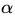，如此我们便可以通过拉格朗日函数将约束条件融和到目标函数里去(也就是说把条件融合到一个函数里头，现在只用一个函数表达式便能清楚的表达出我们的问题)：

然后我们令
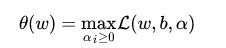
容易验证：
- 当某个约束条件不满足时，例如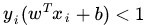，那么我们显然有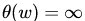（只要令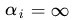即可）。
- 而当所有约束条件都满足时，则有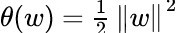，亦即我们最初要最小化的量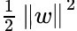。
因此，在要求约束条件得到满足的情况下最小化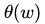，实际上等价于直接最小化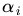（当然，这里也有约束条件，就是≥0,i=1,…,n） ，因为如果约束条件没有得到满足，会等于无穷大，自然不会是我们所要求的最小值。
具体写出来，我们现在的目标函数变成了：
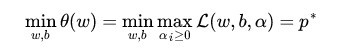
这里用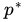表示这个问题的最优值，这个问题和我们最初的问题是等价的。不过，现在我们来把最小和最大的位置交换一下：
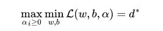
当然，交换以后的问题不再等价于原问题，这个新问题的最优值用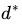来表示。并且，我们有≤ ，这在直观上也不难理解，最大值中最小的一个总也比最小值中最大的一个要大。总之，第二个问题的最优值在这里提供了一个第一个问题的最优值的一个下界，在满足某些条件的情况下，这两者相等，这个时候我们就可以通过求解第二个问题来间接地求解第一个问题。
也就是说，下面我们可以先求L 对w、b的极小，再求L 对的极大。而且，之所以从minmax的原始问题，转化为maxmin的对偶问题，一者因为是的近似解，二者，转化为对偶问题后，更容易求解。
2.1.2、KKT条件
与此同时，上段说“在满足某些条件的情况下”，这所谓的“满足某些条件”就是要满足KKT条件。那KKT条件的表现形式是什么呢？
据维基百科：KKT 条件的介绍，一般地，一个最优化数学模型能够表示成下列标准形式：

其中，f(x)是需要最小化的函数，h(x)是等式约束，g(x)是不等式约束，p和q分别为等式约束和不等式约束的数量。同时，我们得明白以下两个定理：
- 凸优化的概念：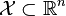为一凸集， 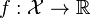 为一凸函数。凸优化就是要找出一点 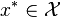，使得每一 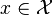 满足 。
- KKT条件的意义：它是一个非线性规划（Nonlinear Programming）问题能有最优化解法的必要和充分条件。
而KKT条件就是指上面最优化数学模型的标准形式中的最小点 x* 必须满足下面的条件：
经过论证，我们这里的问题是满足 KKT 条件的（首先已经满足Slater condition，再者f和gi也都是可微的，即L对w和b都可导），因此现在我们便转化为求解第二个问题。
也就是说，现在，咱们的原问题通过满足一定的条件，已经转化成了对偶问题。而求解这个对偶学习问题，分为3个步骤，首先要让L(w，b，a) 关于 w 和 b 最小化，然后求对α的极大，最后利用SMO算法求解对偶因子。
2.1.3、对偶问题求解的3个步骤
1）、首先固定，要让 L 关于 w 和 b 最小化，我们分别对w，b求偏导数，即令 ∂L/∂w 和 ∂L/∂b 等于零（对w求导结果的解释请看本文评论下第45楼回复）：
以上结果代回上述的 L：

得到：

提醒：有读者可能会问上述推导过程如何而来？说实话，其具体推导过程是比较复杂的，如下图所示：
最后，得到：
如 jerrylead所说：“倒数第4步”推导到“倒数第3步”使用了线性代数的转置运算，由于ai和yi都是实数，因此转置后与自身一样。“倒数第3步”推导到“倒数第2步”使用了(a+b+c+…)(a+b+c+…)=aa+ab+ac+ba+bb+bc+…的乘法运算法则。最后一步是上一步的顺序调整。
L(
从上面的最后一个式子，我们可以看出，此时的拉格朗日函数只包含了一个变量，那就是，然后下文的第2步，求出了便能求出w，和b，由此可见，上文第1.2节提出来的核心问题：分类函数也就可以轻而易举的求出来了。
2）、求对的极大，即是关于对偶问题的最优化问题，从上面的式子得到：
(不得不提醒下读者：经过上面第一个步骤的求w和b，得到的拉格朗日函数式子已经没有了变量w，b，只有，而反过来，求得的将能导出w，b的解，最终得出分离超平面和分类决策函数。为何呢？因为如果求出了，根据，即可求出w。然后通过，即可求出b )
3）、如前面所说，这个问题有更加高效的优化算法，即我们常说的SMO算法。
2.1.4、序列最小最优化SMO算法
细心的读者读至上节末尾处，怎么拉格朗日乘子的值可能依然心存疑惑。实际上，关于的求解可以用一种快速学习算法即SMO算法，这里先简要介绍下。
OK，当：
要解决的是在参数上求最大值W的问题，至于和都是已知数（其中 是一个参数，用于控制目标函数中两项（“寻找 margin 最大的超平面”和“保证数据点偏差量最小”）之间的权重。和上文最后的式子对比一下，可以看到唯一的区别就是现在 dual variable 多了一个上限 C ，关于C的具体由来请查看下文第2.3节）。
要了解这个SMO算法是如何推导的，请跳到下文第3.5节、SMO算法。
到目前为止，我们的 SVM 还比较弱，只能处理线性的情况，下面我们将引入核函数，进而推广到非线性分类问题。
2.2、核函数Kernel
2.2.1、特征空间的隐式映射：核函数
在线性不可分的情况下，支持向量机通过某种事先选择的非线性映射(核函数)将输入变量映射到一个高维特征空间，在这个空间中构造最优分类超平面。我们使用SVM进行数据集分类工作的过程首先是同预先选定的一些非线性映射将输入空间映射到高维特征空间(下图很清晰的表达了通过映射到高维特征空间，而把平面上本身不好分的非线性数据分了开来)：
使得在高维属性空间中有可能最训练数据实现超平面的分割，避免了在原输入空间中进行非线性曲面分割计算，且在处理高维输入空间的分类时，这种方法尤其有效，其工作原理如下图所示：
而在我们遇到核函数之前，如果用原始的方法，那么在用线性学习器学习一个非线性关系，需要选择一个非线性特征集，并且将数据写成新的表达形式，这等价于应用一个固定的非线性映射，将数据映射到特征空间，在特征空间中使用线性学习器，因此，考虑的假设集是这种类型的函数：
这里ϕ：X->F是从输入空间到某个特征空间的映射，这意味着建立非线性学习器分为两步：
- 首先使用一个非线性映射将数据变换到一个特征空间F，
- 然后在特征空间使用线性学习器分类。
这意味着假设可以表达为训练点的线性组合，因此决策规则可以用测试点和训练点的内积来表示：
如果有一种方式可以在特征空间中直接计算内积〈φ(xi · φ(x)〉，就像在原始输入点的函数中一样，就有可能将两个步骤融合到一起建立一个非线性的学习器，这样直接计算法的方法称为核函数方法，于是，核函数便横空出世了。
定义：核是一个函数K，对所有x，z(-X，满足，这里φ是从X到内积特征空间F的映射。
2.2.2、核函数：如何处理非线性数据
我们已经知道，如果是线性方法，所以对非线性的数据就没有办法处理。举个例子来说，则是如下图所示的两类数据，分别分布为两个圆圈的形状，这样的数据本身就是线性不可分的，此时咱们该如何把这两类数据分开呢？
此时，一个理想的分界应该是一个“圆圈”而不是一条线（超平面）。如果用 X1 和 X2 来表示这个二维平面的两个坐标的话，我们知道一条二次曲线（圆圈是二次曲线的一种特殊情况）的方程可以写作这样的形式：
如果我们构造另外一个五维的空间，其中五个坐标的值分别为 Z1=X1, Z2=X21, Z3=X2, Z4=X22, Z5=X1X2，那么显然，上面的方程在新的坐标系下可以写作：
关于新的坐标 Z ，这正是一个 hyper plane 的方程！也就是说，如果我们做一个映射 ϕ:R2→R5 ，将 X 按照上面的规则映射为 Z ，那么在新的空间中原来的数据将变成线性可分的，从而使用之前我们推导的线性分类算法就可以进行处理了。这正是 Kernel 方法处理非线性问题的基本思想。
再进一步描述 Kernel 的细节之前，不妨再来看看这个例子映射过后的直观例子。具体来说，我这里的超平面实际的方程是这个样子（圆心在 X2 轴上的一个正圆）：
因此我只需要把它映射到 Z1=X21, Z2=X22, Z3=X2 这样一个三维空间中即可，下图即是映射之后的结果，将坐标轴经过适当的旋转，就可以很明显地看出，数据是可以通过一个平面来分开的：

回忆一下，我们上一次2.1节中得到的最终的分类函数是这样的：

映射过后的空间是：

而其中的 α 也是通过求解如下 dual 问题而得到的：

这样一来问题就解决了吗？其实稍想一下就会发现有问题：在最初的例子里，我们对一个二维空间做映射，选择的新空间是原始空间的所有一阶和二阶的组合，得到了五个维度；如果原始空间是三维，那么我们会得到 19 维的新空间，这个数目是呈爆炸性增长的，这给 ϕ(⋅) 的计算带来了非常大的困难，而且如果遇到无穷维的情况，就根本无从计算了。所以就需要 Kernel 出马了。
还是从最开始的简单例子出发，设两个向量和，而ϕ(⋅)即是到前面2.2.1节说的五维空间的映射，因此映射过后的内积为：
（公式说明：上面的这两个推导过程中，所说的前面的五维空间的映射，这里说的前面便是文中2.2.1节的所述的映射方式，仔细看下2.2.1节的映射规则，再看那第一个推导，其实就是计算x1，x2各自的内积，然后相乘相加即可，第二个推导则是直接平方，去掉括号，也很容易推出来）
另外，我们又注意到：
二者有很多相似的地方，实际上，我们只要把某几个维度线性缩放一下，然后再加上一个常数维度，具体来说，上面这个式子的计算结果实际上和映射

之后的内积的结果是相等的，那么区别在于什么地方呢？
一个是映射到高维空间中，然后再根据内积的公式进行计算；
而另一个则直接在原来的低维空间中进行计算，而不需要显式地写出映射后的结果。
（公式说明：上面之中，最后的两个式子，第一个算式，是带内积的完全平方式，可以拆开，然后，通过凑一个得到，第二个算式，也是根据第一个算式凑出来的）
回忆刚才提到的映射的维度爆炸，在前一种方法已经无法计算的情况下，后一种方法却依旧能从容处理，甚至是无穷维度的情况也没有问题。
我们把这里的计算两个向量在隐式映射过后的空间中的内积的函数叫做核函数 (Kernel Function) ，例如，在刚才的例子中，我们的核函数为：
核函数能简化映射空间中的内积运算——刚好“碰巧”的是，在我们的 SVM 里需要计算的地方数据向量总是以内积的形式出现的。对比刚才我们上面写出来的式子，现在我们的分类函数为：
其中 由如下 dual 问题计算而得：
这样一来计算的问题就算解决了，避开了直接在高维空间中进行计算，而结果却是等价的。
2.3、使用松弛变量处理 outliers 方法
在本文第一节最开始讨论支持向量机的时候，我们就假定，数据是线性可分的，亦即我们可以找到一个可行的超平面将数据完全分开。后来为了处理非线性数据，在上文2.2节使用 Kernel 方法对原来的线性 SVM 进行了推广，使得非线性的的情况也能处理。虽然通过映射 ϕ(⋅) 将原始数据映射到高维空间之后，能够线性分隔的概率大大增加，但是对于某些情况还是很难处理。
例如可能并不是因为数据本身是非线性结构的，而只是因为数据有噪音。对于这种偏离正常位置很远的数据点，我们称之为 outlier ，在我们原来的 SVM 模型里，outlier 的存在有可能造成很大的影响，因为超平面本身就是只有少数几个 support vector 组成的，如果这些 support vector 里又存在 outlier 的话，其影响就很大了。例如下图：

用黑圈圈起来的那个蓝点是一个 outlier ，它偏离了自己原本所应该在的那个半空间，如果直接忽略掉它的话，原来的分隔超平面还是挺好的，但是由于这个 outlier 的出现，导致分隔超平面不得不被挤歪了，变成途中黑色虚线所示（这只是一个示意图，并没有严格计算精确坐标），同时 margin 也相应变小了。当然，更严重的情况是，如果这个 outlier 再往右上移动一些距离的话，我们将无法构造出能将数据分开的超平面来。
为了处理这种情况，SVM 允许数据点在一定程度上偏离一下超平面。例如上图中，黑色实线所对应的距离，就是该 outlier 偏离的距离，如果把它移动回来，就刚好落在原来的超平面上，而不会使得超平面发生变形了。
我们原来的约束条件为：
现在考虑到outlier问题，约束条件变成了：
其中称为松弛变量 (slack variable) ，对应数据点允许偏离的 functional margin 的量。当然，如果我们运行任意大的话，那任意的超平面都是符合条件的了。所以，我们在原来的目标函数后面加上一项，使得这些的总和也要最小：
其中 C 是一个参数，用于控制目标函数中两项（“寻找 margin 最大的超平面”和“保证数据点偏差量最小”）之间的权重。注意，其中 是需要优化的变量（之一），而 C 是一个事先确定好的常量。完整地写出来是这个样子：
用之前的方法将限制或约束条件加入到目标函数中，得到新的拉格朗日函数，如下所示：
分析方法和前面一样，转换为另一个问题之后，我们先让针对w、b和最小化：
将 w 带回 并化简，得到和原来一样的目标函数：
不过，由于我们得到而又有ri >= 0（作为 Lagrange multiplier 的条件），因此有，所以整个 dual 问题现在写作：
把前后的结果对比一下（错误修正：图中的Dual formulation中的Minimize应为maxmize）：
可以看到唯一的区别就是现在 dual variable 多了一个上限 C 。而 Kernel 化的非线性形式也是一样的，只要把换成即可。这样一来，一个完整的，可以处理线性和非线性并能容忍噪音和 outliers 的支持向量机才终于介绍完毕了。
行文至此，可以做个小结，不准确的说，SVM它本质上即是一个分类方法，用w^T+b定义分类函数，于是求w、b，为寻最大间隔，引出1/2||w||^2，继而引入拉格朗日因子，化为对拉格朗日乘子a的求解（求解过程中会涉及到一系列最优化或凸二次规划等问题），如此，求w.b与求a等价，而a的求解可以用一种快速学习算法SMO，至于核函数，是为处理非线性情况，若直接映射到高维计算恐维度爆炸，故在低维计算，等效高维表现。
第三层、扩展SVM
3.1、损失函数
在本文1.0节有这么一句话“支持向量机(SVM)是90年代中期发展起来的基于统计学习理论的一种机器学习方法，通过寻求结构化风险最小来提高学习机泛化能力，实现经验风险和置信范围的最小化，从而达到在统计样本量较少的情况下，亦能获得良好统计规律的目的。”但初次看到的读者可能并不了解什么是结构化风险，什么又是经验风险。要了解这两个所谓的“风险”，还得又从监督学习说起。
监督学习实际上就是一个经验风险或者结构风险函数的最优化问题。风险函数度量平均意义下模型预测的好坏，模型每一次预测的好坏用损失函数来度量。它从假设空间F中选择模型f作为决策函数，对于给定的输入X，由f(X)给出相应的输出Y，这个输出的预测值f(X)与真实值Y可能一致也可能不一致，用一个损失函数来度量预测错误的程度。损失函数记为L(Y, f(X))。
常用的损失函数有以下几种（基本引用自《统计学习方法》）：

如此，SVM有第二种理解，即最优化+损失最小，或如@夏粉_百度所说“可从损失函数和优化算法角度看SVM，boosting，LR等算法，可能会有不同收获”。
关于损失函数，还可以看看张潼的这篇《Statistical behavior and consistency of classification methods based on convex risk minimization》。各种算法中常用的损失函数基本都具有fisher一致性，优化这些损失函数得到的分类器可以看作是后验概率的“代理”。
此外，他还有另外一篇论文《Statistical analysis of some multi-category large margin classification methods》，在多分类情况下margin loss的分析，这两篇对Boosting和SVM使用的损失函数分析的很透彻。
3.2、SMO算法
在上文2.1.2节中，我们提到了求解对偶问题的序列最小最优化SMO算法，但并未提到其具体解法。
事实上，SMO算法是由Microsoft Research的John C. Platt在1998年发表的一篇论文《Sequential Minimal Optimization A Fast Algorithm for Training Support Vector Machines》中提出，它很快成为最快的二次规划优化算法，特别针对线性SVM和数据稀疏时性能更优。
接下来，咱们便参考John C. Platt的这篇文章来看看SMO的解法是怎样的。
3.2.1、SMO算法的解法
咱们首先来定义特征到结果的输出函数为
再三强调，这个u与我们之前定义的实质是一样的。
接着，咱们重新定义咱们原始的优化问题，权当重新回顾，如下：
求导得到：
代入中，可得。
引入对偶因子后，得：
s.t：且
注：这里得到的min函数与我们之前的max函数实质也是一样，因为把符号变下，即有min转化为max的问题，且yi也与之前的等价，yj亦如此。
经过加入松弛变量后，模型修改为：
从而最终我们的问题变为：

继而，根据KKT条件可以得出其中取值的意义为：

这里的还是拉格朗日乘子(问题通过拉格朗日乘法数来求解)
对于第1种情况，表明是正常分类，在边界内部（我们知道正确分类的点yi*f(xi)>=0）；
对于第2种情况，表明了是支持向量，在边界上；
对于第3种情况，表明了是在两条边界之间；
而最优解需要满足KKT条件，即上述3个条件都得满足，以下几种情况出现将会出现不满足：
<=1但是<C则是不满足的,而原本=C
>=1但是>0则是不满足的而原本=0
=1但是=0或者=C则表明不满足的，而原本应该是0<<C
所以要找出不满足KKT条件的这些ai，并更新这些ai，但这些ai又受到另外一个约束，即
注：别忘了2.1.1节中，L对a、b求偏导，得到：

因此，我们通过另一个方法，即同时更新ai和aj，要求满足以下等式：
就能保证和为0的约束。
利用yiai+yjaj=常数，消去ai，可得到一个关于单变量aj的一个凸二次规划问题，不考虑其约束0<=aj<=C,可以得其解为：
这里，，表示旧值。
然后考虑约束0<=aj<=C可得到a的解析解为：
把SMO中对于两个参数求解过程看成线性规划来理解来理解的话，那么下图所表达的便是约束条件：
根据yi和yj同号或异号，可得出两个拉格朗日乘子的上下界分别为：
对于。
那么如何求得ai和aj呢？
- 对于ai，即第一个乘子，可以通过刚刚说的那3种不满足KKT的条件来找；
- 而对于第二个乘子aj可以找满足条件 ：求得。
而b的更新则是：
在满足下述条件：
下更新b，且每次更新完两个乘子的优化后，都需要再重新计算b，及对应的Ei值。
最后更新所有ai，y和b，这样模型就出来了，从而即可求出咱们开头提出的分类函数
此外，这里也有一篇类似的文章，大家可以参考下。
3.2.2、SMO算法的步骤
这样，SMO的主要步骤如下：
意思是，
第一步选取一对ai和aj，选取方法使用启发式方法；
第二步，固定除ai和aj之外的其他参数，确定W极值条件下的ai，由aj表示ai。
假定在某一次迭代中，需要更新，对应的拉格朗日乘子，，那么这个小规模的二次规划问题写为：
那么在每次迭代中，如何更新乘子呢？引用这里的两张PPT说明下：

知道了如何更新乘子，那么选取哪些乘子进行更新呢？具体选择方法有以下两个步骤：
步骤1：先“扫描”所有乘子，把第一个违反KKT条件的作为更新对象，令为a2；
步骤2：在所有不违反KKT条件的乘子中，选择使|E1 −E2|最大的a1（注：别忘了，其中，而，求出来的E代表函数ui对输入xi的预测值与真实输出类标记yi之差）。
值得一提的是，每次更新完两个乘子的优化后，都需要再重新计算b，及对应的Ei值。
与此同时，乘子的选择务必遵循两个原则：
- 使乘子能满足KKT条件
- 对一个满足KKT条件的乘子进行更新，应能最大限度增大目标函数的值（类似于梯度下降）
综上，SMO算法的基本思想是将Vapnik在1982年提出的Chunking方法推到极致，SMO算法每次迭代只选出两个分量ai和aj进行调整，其它分量则保持固定不变，在得到解ai和aj之后，再用ai和aj改进其它分量。与通常的分解算法比较，尽管它可能需要更多的迭代次数，但每次迭代的计算量比较小，所以该算法表现出整理的快速收敛性，且不需要存储核矩阵，也没有矩阵运算。
3.5.3、SMO算法的实现
行文至此，我相信，SVM理解到了一定程度后，是的确能在脑海里从头至尾推导出相关公式的，最初分类函数，最大化分类间隔，max1/||w||，min1/2||w||^2，凸二次规划，拉格朗日函数，转化为对偶问题，SMO算法，都为寻找一个最优解，一个最优分类平面。一步步梳理下来，为什么这样那样，太多东西可以追究，最后实现。如下图所示：
至于下文中将阐述的核函数则为是为了更好的处理非线性可分的情况，而松弛变量则是为了纠正或约束少量“不安分”或脱离集体不好归类的因子。
台湾的林智仁教授写了一个封装SVM算法的libsvm库，大家可以看看，此外这里还有一份libsvm的注释文档。
除了在这篇论文《fast training of support vector machines using sequential minimal optimization》中platt给出了SMO算法的逻辑代码之外，这里也有一份SMO的实现代码，大家可以看下。
读者评论
本文发表后，微博上的很多朋友给了不少意见，以下是节选的一些精彩评论：
“压力”陡增的评论→//@藏了个锋：我是看着July大神的博文长大的啊//@zlkysl：就是看了最后那一篇才决定自己的研究方向为SVM的。— http://weibo.com/1580904460/zraWk0u6u?mod=weibotime。
@张金辉：“SVM的三重境界，不得不转的一篇。其实Coursera的课堂上Andrew Ng讲过支持向量机，但显然他没有把这作为重点，加上Ng讲支持向量机的方法我一时半会难以完全消化，所以听的也是一知半解。真正开始了解支持向量机就是看的这篇“三重境界”，之后才对这个算法有了大概的概念，以至如何去使用，再到其中的原理为何，再到支持向量机的证明等。总之，这篇文章开启了我长达数月的研究支持向量机阶段，直到今日。”— http://zhan.renren.com/profile/249335584?from=template#!//tag/三重境界。
@孤独之守望者：”最后，推出svm的cost function 是hinge loss，然后对比其他的方法的cost function，说明其实他们的目标函数很像，那么问题是svm为什么这么popular呢？您可以再加些VC dimension跟一些error bound的数学，点一下，提供一个思路和方向”。— http://weibo.com/1580904460/AiohoyDwq?mod=weibotime。
@夏粉_百度：“在面试时，考察SVM可考察机器学习各方面能力：目标函数,优化过程,并行方法，算法收敛性,样本复杂度，适用场景,调参经验，不过个人认为考察boosting和LR也还不错啊。此外，随着统计机器学习不断进步，SVM只被当成使用了一个替代01损失hinge研究，更通用的方法被提出，损失函数研究替代损失与贝叶斯损失关系，算法稳定性研究替代损失与推广性能关系,凸优化研究如何求解凸目标函数，SVM,boosting等算法只是这些通用方法的一个具体组建而已。”
@居里猴姐：关于SVM损失函数的问题，可以看看张潼老师的这篇《Statistical behavior and consistency of classification methods based on convex risk minimization》。各种算法中常用的损失函数基本都具有fisher一致性，优化这些损失函数得到的分类器可以看作是后验概率的“代理”。此外，张潼老师还有另外一篇论文《Statistical analysis of some multi-category large margin classification methods》，在多分类情况下margin loss的分析，这两篇对Boosting和SVM使用的损失函数分析的很透彻。
@夏粉_百度：SVM用了hinge损失，hinge损失不可导，不如其它替代损失方便优化并且转换概率麻烦。核函数也不太用，现在是大数据时代，样本非常大，无法想象一个n^2的核矩阵如何存储和计算。 而且，现在现在非线性一般靠深度学习了。//@Copper_PKU:请教svm在工业界的应用典型的有哪些？工业界如何选取核函数，经验的方法？svm的训练过程如何优化？
@Copper_PKU：July的svm tutorial 我个人觉得还可以加入和修改如下部分：(1) 对于支持向量解释，可以结合图和拉格朗日参数来表达，松弛中sv没有写出来. (2) SMO算法部分，加入Joachims论文中提到的算法，以及SMO算法选取workset的方法，包括SMO算法的收敛判断，还有之前共轭梯度求解方法，虽然是较早的算法，但是对于理解SMO算法有很好的效果。模型的优化和求解都是迭代的过程，加入历史算法增强立体感。— http://weibo.com/1580904460/Akw6dl3Yk#_rnd1385474436177。
//@廖临川: 之所以sgd对大训练集的效果更好，1.因为SGD优化每次迭代使用样本子集，比使用训练全集（尤其是百万数量级）要快得多；2.如果目标函数是凸的或者伪凸的，SGD几乎必然可以收敛到全局最优；否则，则收敛到局部最优；3.SGD一般不需要收敛到全局最优，只要得到足够好的解，就可以立即停止。//@Copper_PKU：sgd的核心思想：是迭代训练，每拿到一个样本就算出基于当前w(t) 的loss function，t代表训练第t次，然后进行下一w（t+1）的更新，w(t+1)=w(t)-(learning rate) * loss function的梯度，这个类比神经网络中bp中的参数训练方法。 sample by sample就是每次仅处理一个样本 而不是一个batch。
//@Copper_PKU：从损失函数角度说：primal问题可以理解为正则化项+lossfunction，求解目标是在两个中间取平衡 如果强调loss function最小则会overfitting，所以有C参数。 //@研究者July：SVM还真就是在一定限定条件下，即约束条件下求目标函数的最优值问题，同时，为减少误判率，尽量让损失最小。
- …
参考文献及推荐阅读
- 《支持向量机导论》，[美] Nello Cristianini / John Shawe-Taylor 著；
- 支持向量机导论一书的支持网站：http://www.support-vector.net/；
- 《数据挖掘导论》，[美] Pang-Ning Tan / Michael Steinbach / Vipin Kumar 著；
- 《数据挖掘：概念与技术》，(加)Jiawei Han;Micheline Kamber 著；
- 《数据挖掘中的新方法：支持向量机》，邓乃扬 田英杰 著；
- 《支持向量机—理论、算法和扩展》，邓乃扬 田英杰 著；
- 支持向量机系列，pluskid：http://blog.pluskid.org/?page_id=683；
- http://www.360doc.com/content/07/0716/23/11966_615252.shtml；
- 数据挖掘十大经典算法初探；
- 《模式识别支持向量机指南》，C.J.C Burges 著；
- 《统计学习方法》，李航著(第7章有不少内容参考自支持向量机导论一书，不过，可以翻翻看看)；
- 《统计自然语言处理》，宗成庆编著，第十二章、文本分类；
- SVM入门系列，Jasper：http://www.blogjava.net/zhenandaci/category/31868.html；
- 最近邻决策和SVM数字识别的实现和比较，作者不详；
- 斯坦福大学机器学习课程原始讲义：http://www.cnblogs.com/jerrylead/archive/2012/05/08/2489725.html；
- 斯坦福机器学习课程笔记：http://www.cnblogs.com/jerrylead/tag/Machine%20Learning/；
- http://www.cnblogs.com/jerrylead/archive/2011/03/13/1982639.html；
- SMO算法的数学推导：http://www.cnblogs.com/jerrylead/archive/2011/03/18/1988419.html；
- 数据挖掘掘中所需的概率论与数理统计知识、上；
- 关于机器学习方面的文章，可以读读：http://www.cnblogs.com/vivounicorn/category/289453.html；
- 数学系教材推荐：http://blog.sina.com.cn/s/blog_5e638d950100dswh.html；
- 《神经网络与机器学习(原书第三版)》，[加] Simon Haykin 著；
- 正态分布的前世今生：http://t.cn/zlH3Ygc；
- 《数理统计学简史》，陈希孺院士著；
- 《最优化理论与算法(第2版)》，陈宝林编著；
- A Gentle Introduction to Support Vector Machines in Biomedicine：http://www.nyuinformatics.org/downloads/supplements/SVM_Tutorial_2010/Final_WB.pdf，此PPT很赞，除了对引入拉格朗日对偶变量后的凸二次规划问题的深入度不够之外，其它都挺好，配图很精彩，本文有几张图便引自此PPT中；
- 来自卡内基梅隆大学carnegie mellon university(CMU)的讲解SVM的PPT：http://www.autonlab.org/tutorials/svm15.pdf；
- 发明libsvm的台湾林智仁教授06年的机器学习讲义SVM：http://wenku.baidu.com/link?url=PWTGMYNb4HGUrUQUZwTH2B4r8pIMgLMiWIK1ymVORrds_11VOkHwp-JWab7IALDiors64JW_6mD93dtuWHwFWxsAk6p0rzchR8Qh5_4jWHC；
- http://staff.ustc.edu.cn/~ketang/PPT/PRLec5.pdf；
- Introduction to Support Vector Machines (SVM)，By Debprakash Patnai M.E (SSA)，https://www.google.com.hk/url?sa=t&rct=j&q=&esrc=s&source=web&cd=1&ved=0CCwQFjAA&url=http%3a%2f%2fwww%2epws%2estu%2eedu%2etw%2fccfang%2findex%2efiles%2fAI%2fAI%26ML-Support%2520Vector%2520Machine-1%2eppt&ei=JRR6UqT5C-iyiQfWyIDgCg&usg=AFQjCNGw1fTbpH4ltQjjmx1d25ZqbCN9nA；
- 多人推荐过的libsvm：http://www.csie.ntu.edu.tw/~cjlin/libsvm/；
- 《machine learning in action》，中文版为《机器学习实战》；
- SMO算法的提出：Sequential Minimal Optimization A Fast Algorithm for Training Support Vector Machines：http://research.microsoft.com/en-us/um/people/jplatt/smoTR.pdf；
- 《统计学习理论的本质》，[美] Vladimir N. Vapnik著，非常晦涩，不做过多推荐；
- 张兆翔，机器学习第五讲之支持向量机http://irip.buaa.edu.cn/~zxzhang/courses/MachineLearning/5.pdf；
- VC维的理论解释：http://www.svms.org/vc-dimension/，中文VC维解释http://xiaoxia001.iteye.com/blog/1163338；
- 来自NEC Labs America的Jason Weston关于SVM的讲义http://www.cs.columbia.edu/~kathy/cs4701/documents/jason_svm_tutorial.pdf；
- 来自MIT的SVM讲义：http://www.mit.edu/~9.520/spring11/slides/class06-svm.pdf；
- PAC问题：http://www.cs.huji.ac.il/~shashua/papers/class11-PAC2.pdf；
- 百度张潼老师的两篇论文：《Statistical behavior and consistency of classification methods based on convex risk minimization》http://home.olemiss.edu/~xdang/676/Consistency_of_Classification_Convex_Risk_Minimization.pdf，《Statistical analysis of some multi-category large margin classification methods》；
- http://jacoxu.com/?p=39；
- 《矩阵分析与应用》，清华张贤达著；
- SMO算法的实现：http://blog.csdn.net/techq/article/details/6171688；
- 常见面试之机器学习算法思想简单梳理：http://www.cnblogs.com/tornadomeet/p/3395593.html；
- 矩阵的wikipedia页面：http://zh.wikipedia.org/wiki/%E7%9F%A9%E9%98%B5；
- 最小二乘法及其实现：http://blog.csdn.net/qll125596718/article/details/8248249；
- 统计学习方法概论：http://blog.csdn.net/qll125596718/article/details/8351337；
- http://www.csdn.net/article/2012-12-28/2813275-Support-Vector-Machine；
- A Tutorial on Support Vector Regression：http://alex.smola.org/papers/2003/SmoSch03b.pdf；SVR简明版：http://www.cmlab.csie.ntu.edu.tw/~cyy/learning/tutorials/SVR.pdf。
- SVM Org：http://www.support-vector-machines.org/；
- R. Collobert. Large Scale Machine Learning. Université Paris VI phd thesis. 2004：http://ronan.collobert.com/pub/matos/2004_phdthesis_lip6.pdf；
- Making Large-Scale SVM Learning Practical：http://www.cs.cornell.edu/people/tj/publications/joachims_99a.pdf；
- 文本分类与SVM：http://blog.csdn.net/zhzhl202/article/details/8197109；
- Working Set Selection Using Second Order Information
for Training Support Vector Machines：http://www.csie.ntu.edu.tw/~cjlin/papers/quadworkset.pdf； - SVM Optimization: Inverse Dependence on Training Set Size：http://icml2008.cs.helsinki.fi/papers/266.pdf；
- Large-Scale Support Vector Machines: Algorithms and Theory：http://cseweb.ucsd.edu/~akmenon/ResearchExam.pdf；
- 凸优化的概念：http://cs229.stanford.edu/section/cs229-cvxopt.pdf；
- 《凸优化》，作者: Stephen Boyd / Lieven Vandenberghe，原作名: Convex Optimization；
- Large-scale Non-linear Classification: Algorithms and Evaluations，Zhuang Wang，讲了很多SVM算法的新进展：http://ijcai13.org/files/tutorial_slides/te2.pdf；